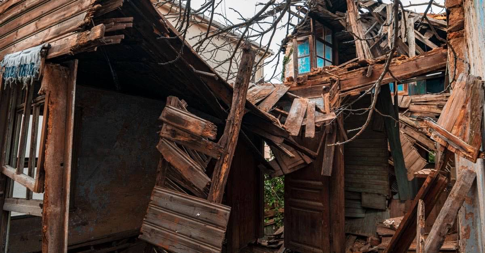

İş yeri hasar gördüyse: DASK'ın bittiği yer, esnafın başladığı yer
Tamamı ticari kullanılan binalar zorunlu deprem sigortası kapsamı dışındadır; iş durması ve kâr kaybı hiçbir hâlde DASK teminatında değildir. Esnafın kaybı bu boşlukta doğar.

Konut hasarında ne yapılacağı az çok konuşulur; iş yeri hasarında hemen hiç konuşulmaz. Oysa esnafın kaybı çoğu zaman iki kat büyüktür: hem işyeri, hem gelir.
Bu sayfa, boşluğun tam olarak nerede olduğunu gösterir.
Birinci boşluk: bina kapsam dışı olabilir
Zorunlu deprem sigortası, mesken olarak inşa edilmiş binalar ile bu binalardaki ticarethane ve büro niteliğindeki bağımsız bölümleri kapsar. Buna karşılık tamamı ticari veya sınai amaçla kullanılan binalar genel şartlar gereği kapsam dışındadır.
Pratik sonucu şudur: apartmanın zemin katındaki dükkân kapsamda olabilirken, müstakil bir iş hanı veya fabrika için ticari deprem sigortası gerekir.
İkinci boşluk: asıl kayıp zaten teminat dışı
Diyelim bina kapsamda ve tazminat ödendi. Esnafın asıl kaybı yine karşılanmaz:
| Zarar kalemi | Zorunlu deprem sigortası | Nerede karşılanır |
|---|---|---|
| Bina hasarı | Kapsamdaysa, azami teminata kadar | Ticari poliçe üstünü kapatabilir |
| Emtia, demirbaş, makine | Yok | İşyeri paket poliçesi |
| İş durması, kâr kaybı | Yok | Kâr kaybı teminatı |
| Enkaz kaldırma | Yok | Ek teminat |
| Çalışanların bedeni zararı | Yok | Ferdi kaza / SGK / dava |
Poliçenizi bugün açın
"İşyeri sigortam var" cümlesi çoğu zaman yangın ve hırsızlık teminatını anlatır. Poliçede deprem teminatının ve kâr kaybı maddesinin seçili olup olmadığını kontrol edin. Bu kontrol beş dakikadır; karşılığı bir işletmedir.
Kiracı esnafın durumu
Kiracı esnaf iki kez açıkta kalır: bina tazminatı malike ödenir, kendi emtiası ise ayrı poliçe gerektirir. Buna karşılık iki hakkı vardır ve az bilinir:
- Kira ilişkisinde uyarlama ve fesih. Kiralanan yıkılmışsa ifa imkânsızlığı gündeme gelir; hasarlı ama kullanılabilir durumdaysa kira bedelinde indirim ve onarım talebi konuşulur (deprem sonrası kira sözleşmesi).
- Tazminat davasında mülkiyet şartı yoktur. Müteahhide, yapı denetim kuruluşuna ve idareye karşı kendi zararı için dava açabilir (müteahhidin sorumluluğu).
Kalıcı olan: mücbir sebep ve prim ertelemesi
Deprem, Vergi Usul Kanunu bakımından mücbir sebeptir; hâl süresince vergi ödevlerine ilişkin süreler işlemez. SGK tarafında da prim ve bildirim yükümlülüklerinin ertelenmesi gündeme gelir. Ayrıntısı: mücbir sebep ve SGK primleri.
Geçmiş uygulama: 2023 KOSGEB kararları
Emsal — hak değil
2023'te KOSGEB eliyle uygulananlar şunlardı: bölgedeki işletmelerin o yıla ait Kurum borçlarının silinmesi, 1.500.000 TL tutarına kadar acil destek kredisi, 300.000 TL tutarına kadar geri ödemesiz yaşam alanı (konteyner) desteği, iş yeri hasarında 75.000 TL onarım/personel desteği ve ağır hasarlı ya da yıkık iş yerleri için 130.000 TL tutarına kadar geri ödemesiz girişimcilik desteği.
Bunlar o afete özgü program kararlarıdır. Yeni bir afette aynı programın aynı tutarlarla açılacağının garantisi yoktur; doğrulama düzeyi de "tek kaynak"tır.
Ne yapmalı?
- Hasarı belgeleyin. İş yerinin içi, dışı, emtia ve makineler; tarih görünecek şekilde.
- Poliçeleri çıkarın. Deprem teminatı ve kâr kaybı seçili mi?
- Kira ilişkisini yazıya dökün. Ödeme, indirim veya fesih talebinizi yazılı bildirin.
- Mücbir sebep kapsamını teyit edin. İliniz kapsamda değilse bireysel başvuru yapın.
- Program duyurularını kurumun kendi sayfasından doğrulayın, sosyal medyadan değil.
Kanuni dayanak
| Mevzuat | Ne diyor |
|---|---|
| ZDS Genel Şartları A.2 | Tamamı ticari veya sınai amaçla kullanılan binaların zorunlu deprem sigortası kapsamı dışında olduğunu belirler. |
| ZDS Genel Şartları A.3 | Kâr kaybı, iş durması ve dolaylı zararların teminat dışında kaldığını düzenler. |
| 213 sayılı Vergi Usul Kanunu m.13 | Depremi mücbir sebep sayar; vergi ödevlerine ilişkin süreler bu süre boyunca işlemez. |
| 6098 sayılı Türk Borçlar Kanunu m.331 | Önemli sebeple olağanüstü fesih imkânı tanır; iş yeri kirası bakımından da değerlendirilir. |
Sık sorulanlar
Dükkânım DASK kapsamında mı?
Mesken olarak inşa edilmiş bir binanın içindeki ticarethane ve büro niteliğindeki bağımsız bölümler kapsama girebilir. Buna karşılık tamamı ticari veya sınai amaçla kullanılan binalar genel şartlar gereği kapsam dışıdır.
İş yerim kapandı, gelir kaybımı kim karşılar?
İş durması ve kâr kaybı zorunlu deprem sigortasında hiçbir hâlde teminat dışıdır. Bu kalem ancak ticari poliçelerdeki iş durması (kâr kaybı) teminatıyla karşılanabilir.
Kiracı esnafım, bina tazminatından pay alabilir miyim?
Hayır. Poliçe malik adına düzenlenir ve tazminat malike ödenir. Kiracının koruması kendi emtia ve demirbaşı için yaptırdığı poliçedir.
Kira ödemeye devam etmeli miyim?
Kiralanan tamamen yıkılmışsa ifa imkânsızlığı gündeme gelir. Hasarlı ama kullanılabilir durumdaysa ayıp hükümleri devreye girer: kira bedelinde indirim, onarım talebi ve koşulları varsa fesih. Ödemeyi tek taraflı kesmeden önce yazılı bildirim yapın.
Esnafa devlet desteği var mı?
Kalıcı olan, vergi mücbir sebebi ve prim ertelemesidir. 2023'te KOSGEB eliyle uygulanan borç silme, kredi ve geri ödemesiz destekler ise o afete özgü program kararlarıydı.
Bu konuyla ilgili araç
Teminat açığı hesabıBinanın sigorta bedelini ve açıkta kalan tutarı hesaplayın.İlgili rehberler
 Çalışma hayatı ve iş yeri
Deprem işi durdurunca: yarım ücret, haklı fesih ve kısa çalışma
Deprem zorlayıcı sebeptir. İş bir haftadan fazla durursa hem işçinin hem işverenin derhal fesih hakkı doğar; duran bir haftaya kadarki süre için işveren yarım ücret öder.
Çalışma hayatı ve iş yeri
Deprem işi durdurunca: yarım ücret, haklı fesih ve kısa çalışma
Deprem zorlayıcı sebeptir. İş bir haftadan fazla durursa hem işçinin hem işverenin derhal fesih hakkı doğar; duran bir haftaya kadarki süre için işveren yarım ücret öder.
 Konut ve sigorta
DASK neyi karşılar, neyi karşılamaz?
DASK binanızı sigortalar, hayatınızı değil. Ev eşyası, enkaz kaldırma, alternatif konaklama, kira kaybı ve ölüm dâhil bedeni zararlar kapsam dışıdır.
Konut ve sigorta
DASK neyi karşılar, neyi karşılamaz?
DASK binanızı sigortalar, hayatınızı değil. Ev eşyası, enkaz kaldırma, alternatif konaklama, kira kaybı ve ölüm dâhil bedeni zararlar kapsam dışıdır.
 Vergi, prim ve borçlar
Mücbir sebep ilan edilince ne oluyor? Vergi ve prim süreleri durur
Deprem, Vergi Usul Kanunu bakımından mücbir sebeptir. Mücbir sebep hâli süresince vergi ödevlerine ilişkin süreler işlemez; SGK tarafında da erteleme düzenlemeleri gündeme gelir.
Vergi, prim ve borçlar
Mücbir sebep ilan edilince ne oluyor? Vergi ve prim süreleri durur
Deprem, Vergi Usul Kanunu bakımından mücbir sebeptir. Mücbir sebep hâli süresince vergi ödevlerine ilişkin süreler işlemez; SGK tarafında da erteleme düzenlemeleri gündeme gelir.
 Kira ve mülkiyet
Evim hasarlı: kira ödemeye devam edecek miyim? Fesih, indirim ve depozito
Ağır hasar kira ilişkisini çekilmez kılan önemli sebep sayılabilir. Bina tamamen yıkıldıysa ifa imkânsızlığı gündeme gelir.
Kira ve mülkiyet
Evim hasarlı: kira ödemeye devam edecek miyim? Fesih, indirim ve depozito
Ağır hasar kira ilişkisini çekilmez kılan önemli sebep sayılabilir. Bina tamamen yıkıldıysa ifa imkânsızlığı gündeme gelir.